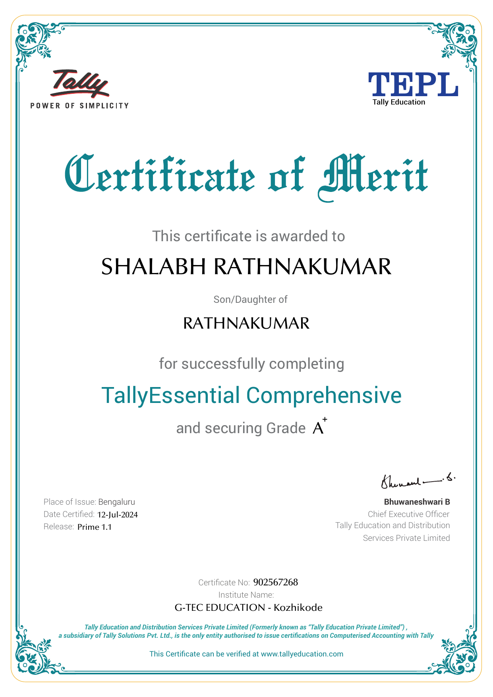
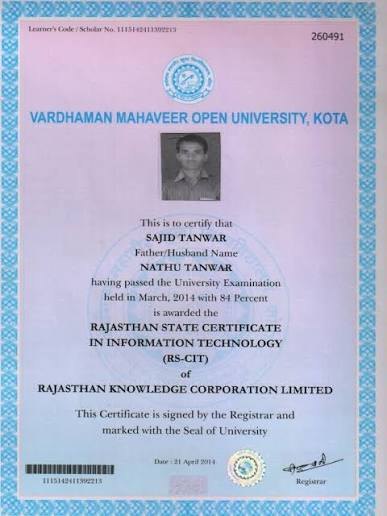
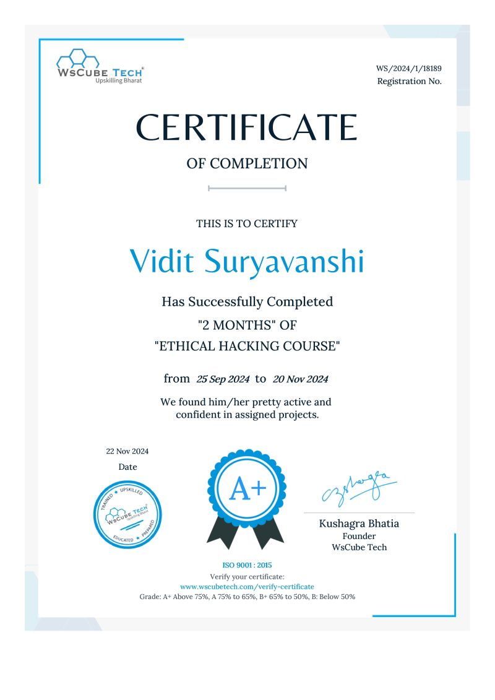
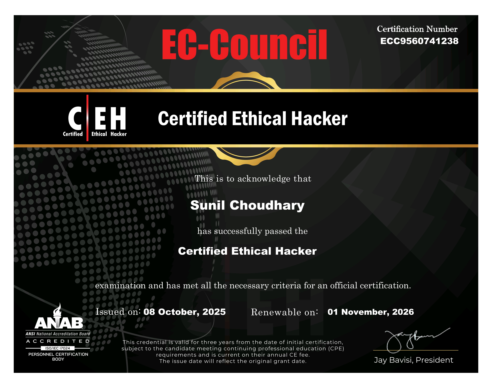

Hello, I'm
Sunil Choudhary
IT & Network Support Professional
Aspiring SOC Analyst | Cybersecurity Enthusiast
Passionate about cybersecurity, network infrastructure, ethical hacking and security operations. Building practical cybersecurity tools while continuously improving my technical knowledge and skills.
Sunil Choudhary
Cybersecurity Professional
CEH v13
Certified
2
IT Experience Roles
2
Cybersecurity Projects
2026
Cybersecurity Journey
About Me
My professional background and career direction.
I am an IT and Network Support Professional with hands-on experience in hospitality IT infrastructure and technical support operations.
My experience includes Windows desktop support, LAN and Wi-Fi troubleshooting, network monitoring, printer support, application assistance and IT operations in a 24x7 hospitality environment.
I am a CEH v13 certified professional with a growing interest in SOC operations, Blue Team practices, network security and ethical hacking.
Currently, I am developing cybersecurity projects, improving my Python skills and working towards my long-term goal of building a career in cybersecurity.
Location: Ahmedabad, Gujarat (Preferred Work Location)
Career Interest: SOC Analyst L1 / Blue Team / Network Security
Availability: Open to Opportunities
Email: cybersunil03@gmail.com
Work Experience
My professional IT and network support experience.
Network Support Executive
Quess Corp Limited
Client Site: Taj Skyline Ahmedabad (IHCL)
- Provided day-to-day IT and technical support in a 24x7 hospitality environment.
- Troubleshot Windows desktops, laptops, Microsoft Office and Outlook issues.
- Handled LAN, Wi-Fi, IP connectivity and basic network troubleshooting.
- Monitored network devices and access points using PRTG Network Monitor and Grandstream GWN Manager.
- Supported printers, drivers, IPTV, guest Wi-Fi and other hotel IT systems.
- Assisted with Oracle OPERA Cloud and Onity key-card encoder support.
- Coordinated technical issues, documentation, shift handovers and escalations.
Network Support Executive
Microsense Network Pvt. Ltd.
Client Site: Taj Skyline Ahmedabad (IHCL)
- Provided desktop and network support for hotel IT operations.
- Assisted with LAN, Wi-Fi and endpoint troubleshooting.
- Supported Windows systems, printers and business applications.
- Assisted in monitoring network connectivity and resolving technical issues.
Internships
Additional learning and professional development experience.
Edgenius Skillfield Mentor Pvt. Ltd.
Cybersecurity Internship Experience
Unified Mentor
Cybersecurity Internship Experience
Technical Skills
Technologies and tools I have worked with and studied.
Networking
TCP/IP, OSI Model, DNS, DHCP, LAN, Wi-Fi, Subnetting, Switches and Access Points
Cybersecurity
Ethical Hacking, Network Security Fundamentals, Vulnerability Assessment and Security Concepts
Security Tools
Wireshark, Nmap, Kali Linux, Burp Suite and PRTG Network Monitor
IT Support
Windows Support, Microsoft Office, Outlook, Printers, Drivers and Troubleshooting
Hospitality IT Systems
Oracle OPERA Cloud, IPTV, Guest Wi-Fi and Onity Key-card Encoder
Programming & Development
Python Fundamentals, CLI Tools, SQLite, Git and GitHub
Projects
Cybersecurity projects and practical development work.
VYRNOX
A Python-based Cybersecurity Intelligence Toolkit developed to bring multiple security testing and analysis capabilities into one project.
Focus: Security analysis, automation and practical learning.
View GitHub Repository ↗SENTRIX
A cybersecurity security-monitoring and event toolkit currently under development, focused on defensive security concepts and practical learning.
Focus: Security monitoring, Python and Blue Team concepts.
In DevelopmentEducation & Qualifications
My educational journey.
Secondary Education (10th)
RBSE Board
58.33%Senior Secondary Education (12th)
RBSE Board
84.20%Bachelor of Science (B.Sc.)
Shri Ram College, Tinwari, Jodhpur
Currently PursuingCyber Security Diploma
ASD Academy, Kota
Currently PursuingCertifications & Training
My certifications and professional learning journey.

Tally
Accounting & Business Software
Grade A
RSCIT
Rajasthan State Certificate in Information Technology
64%
Web Development
WsCube Tech
Grade A
Certified Ethical Hacker (CEH v13)
EC-Council
Examination ClearedUpcoming Certification Goals
My next professional learning targets.
CPENT
Certified Penetration Testing Professional
CHFI
Computer Hacking Forensic Investigator
Activities & Current Work
My ongoing cybersecurity learning and development activities.
Cybersecurity Book
Working on a cybersecurity and ethical hacking book designed to explain cybersecurity fundamentals, ethical hacking concepts and responsible practices.
Work in ProgressCybersecurity Labs
Continuously developing practical knowledge through security tools, networking concepts, ethical hacking exercises and defensive security learning.
Ongoing LearningSOC & Security Monitoring
Improving knowledge of security monitoring, networking, event analysis and incident response fundamentals for a future SOC Analyst role.
Ongoing LearningContact Me
Interested in professional opportunities and collaboration.
Let's Connect
Feel free to contact me for IT Support, Network Support, SOC Analyst L1 and cybersecurity-related opportunities.
Email: cybersunil03@gmail.com
Phone: +91 9352197706
LinkedIn: View LinkedIn Profile ↗
GitHub: View GitHub Profile ↗